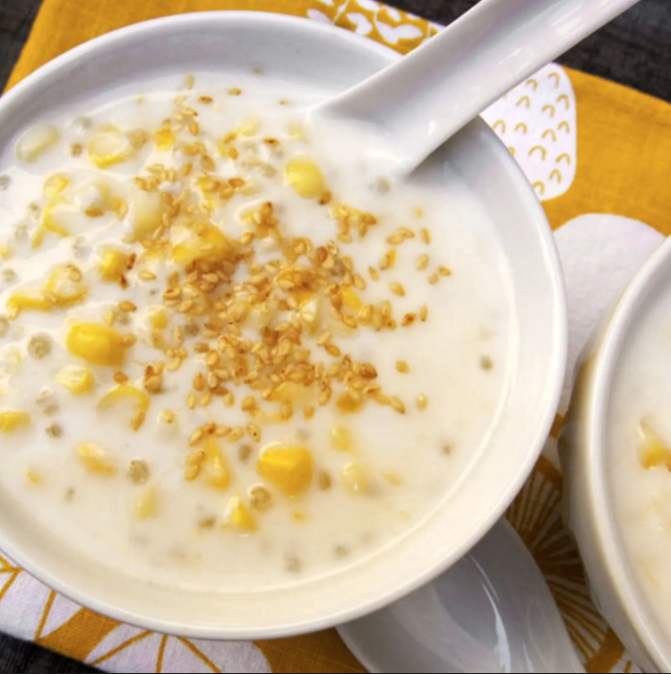

Ingredients:
- 3 large ears corn, shucked
- 4 cups water
- 2 pandan leaves, tied together and knotted (optional)
- 1/4 cup small tapioca pearls
- 2 (14-ounce) cans coconut milk
- 1/2 cup granulated sugar
- Pinch salt
- 2 tablespoons toasted sesame seeds
- Stand each ear of corn up in a bowl and, holding it sturdy, run a sharp chef's knife down the length of the ear to shave off the kernels. Set the kernels aside.
- Combine the corn cobs, pandan leaves (optional), and water in a pot and bring to a boil. Cover, reduce heat, and simmer for 30 minutes.
- Meanwhile, place tapioca pearls in a small bowl, cover with cold water by 1/2 inch and let stand.
- Remove corn cobs and pandan leaves from the pot and discard.
- Add coconut milk, corn kernels, sugar, and a pinch of salt to the pot and stir to combine. Return to a boil and then simmer until corn is tender, about 10 minutes. Taste and adjust sugar and salt, if desired.
- Stir tapioca pearls into the pot and simmer for 2 minutes.
- Remove from heat to cool. Can refrigerate for up to 2 days. If it gets too thick and gloppy, thin it with water.
- Serve warm or cold in bowls or glasses. Garnish with sesame seeds just before serving.
|
 |